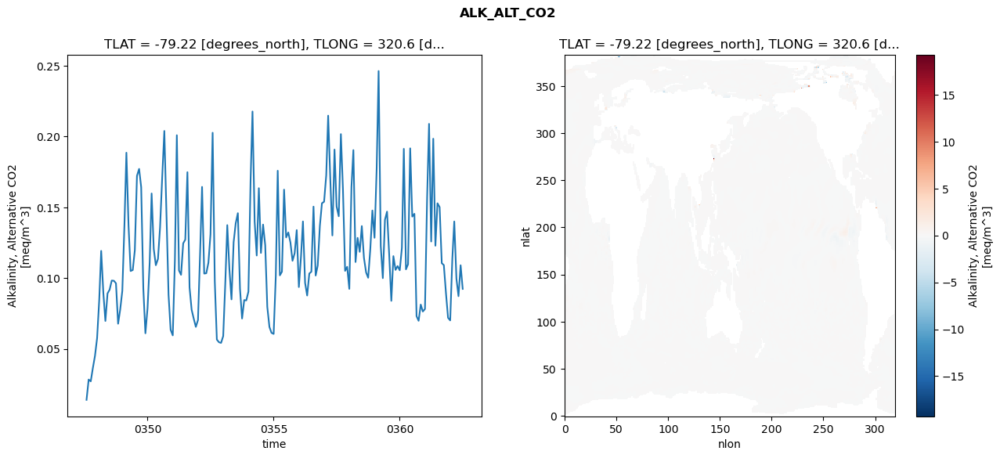
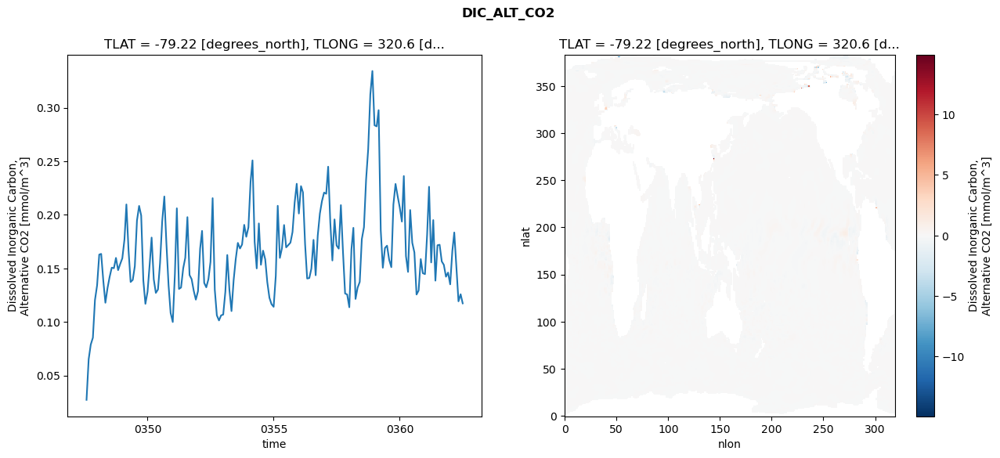
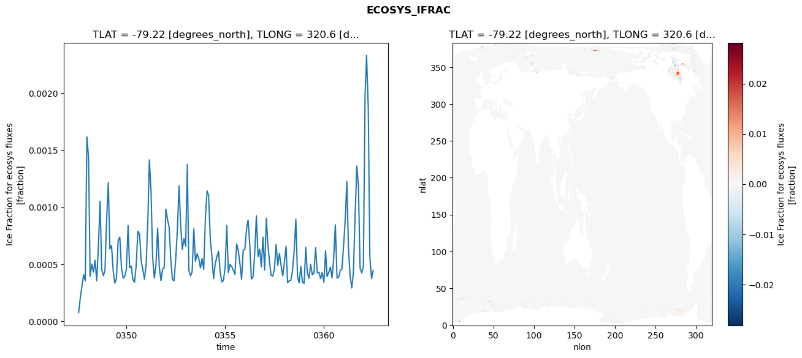
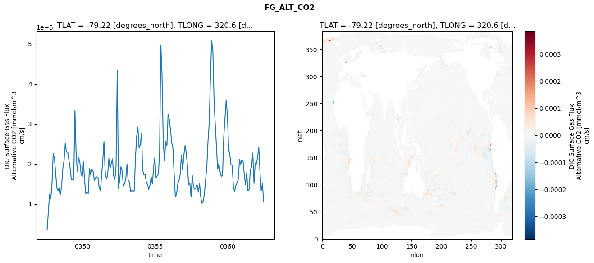

glb-dor_North_Atlantic_basin_005_1999-07-01_00022#
Simulation details#
Case: smyle.cdr-atlas-v0.glb-dor_North_Atlantic_basin_005_1999-07-01_00022.001
Basin: North_Atlantic_basin
Polygon: 5.0
Start date: 1999-07
Show code cell source Hide code cell source
import xarray as xr
import matplotlib.pyplot as plt
Show code cell source Hide code cell source
zarr_store = "/path/to/zarr/store"
# Parameters
zarr_store = "/global/cfs/projectdirs/m4746/Projects/Ocean-CDR-Atlas-v0/data/validation/smyle.cdr-atlas-v0.glb-dor_North_Atlantic_basin_005_1999-07-01_00022.001.validation.zarr"
Show code cell source Hide code cell source
%%time
ds_o = xr.open_zarr(zarr_store).compute()
ds_o
CPU times: user 632 ms, sys: 493 ms, total: 1.12 s
Wall time: 1.44 s
<xarray.Dataset> Size: 2MB
Dimensions: (nlat: 384, nlon: 320, time: 180)
Coordinates:
TLAT float64 8B -79.22
TLONG float64 8B 320.6
ULAT float64 8B -78.95
ULONG float64 8B 321.1
* time (time) object 1kB 0347-08-01 00:00:00 ... 0362-07-01 0...
z_t float32 4B 500.0
Dimensions without coordinates: nlat, nlon
Data variables:
ALK_ALT_CO2_diff (nlat, nlon) float32 492kB nan nan nan ... nan nan nan
ALK_ALT_CO2_rmse (time) float64 1kB 0.01399 0.02833 ... 0.1091 0.09237
DIC_ALT_CO2_diff (nlat, nlon) float32 492kB nan nan nan ... nan nan nan
DIC_ALT_CO2_rmse (time) float64 1kB 0.02732 0.06523 ... 0.1259 0.1174
ECOSYS_IFRAC_diff (nlat, nlon) float32 492kB nan nan nan ... nan nan nan
ECOSYS_IFRAC_rmse (time) float64 1kB 7.736e-05 0.0002067 ... 0.0004473
FG_ALT_CO2_diff (nlat, nlon) float32 492kB nan nan nan ... nan nan nan
FG_ALT_CO2_rmse (time) float64 1kB 3.597e-06 8.005e-06 ... 1.061e-05xarray.Dataset
- nlat: 384
- nlon: 320
- time: 180
- TLAT()float64-79.22
- long_name :
- array of t-grid latitudes
- units :
- degrees_north
array(-79.22052261)
- TLONG()float64320.6
- long_name :
- array of t-grid longitudes
- units :
- degrees_east
array(320.56250892)
- ULAT()float64-78.95
- long_name :
- array of u-grid latitudes
- units :
- degrees_north
array(-78.95289509)
- ULONG()float64321.1
- long_name :
- array of u-grid longitudes
- units :
- degrees_east
array(321.12500894)
- time(time)object0347-08-01 00:00:00 ... 0362-07-...
- bounds :
- time_bound
- long_name :
- time
array([cftime.DatetimeNoLeap(347, 8, 1, 0, 0, 0, 0, has_year_zero=True), cftime.DatetimeNoLeap(347, 9, 1, 0, 0, 0, 0, has_year_zero=True), cftime.DatetimeNoLeap(347, 10, 1, 0, 0, 0, 0, has_year_zero=True), cftime.DatetimeNoLeap(347, 11, 1, 0, 0, 0, 0, has_year_zero=True), cftime.DatetimeNoLeap(347, 12, 1, 0, 0, 0, 0, has_year_zero=True), cftime.DatetimeNoLeap(348, 1, 1, 0, 0, 0, 0, has_year_zero=True), cftime.DatetimeNoLeap(348, 2, 1, 0, 0, 0, 0, has_year_zero=True), cftime.DatetimeNoLeap(348, 3, 1, 0, 0, 0, 0, has_year_zero=True), cftime.DatetimeNoLeap(348, 4, 1, 0, 0, 0, 0, has_year_zero=True), cftime.DatetimeNoLeap(348, 5, 1, 0, 0, 0, 0, has_year_zero=True), cftime.DatetimeNoLeap(348, 6, 1, 0, 0, 0, 0, has_year_zero=True), cftime.DatetimeNoLeap(348, 7, 1, 0, 0, 0, 0, has_year_zero=True), cftime.DatetimeNoLeap(348, 8, 1, 0, 0, 0, 0, has_year_zero=True), cftime.DatetimeNoLeap(348, 9, 1, 0, 0, 0, 0, has_year_zero=True), cftime.DatetimeNoLeap(348, 10, 1, 0, 0, 0, 0, has_year_zero=True), cftime.DatetimeNoLeap(348, 11, 1, 0, 0, 0, 0, has_year_zero=True), cftime.DatetimeNoLeap(348, 12, 1, 0, 0, 0, 0, has_year_zero=True), cftime.DatetimeNoLeap(349, 1, 1, 0, 0, 0, 0, has_year_zero=True), cftime.DatetimeNoLeap(349, 2, 1, 0, 0, 0, 0, has_year_zero=True), cftime.DatetimeNoLeap(349, 3, 1, 0, 0, 0, 0, has_year_zero=True), cftime.DatetimeNoLeap(349, 4, 1, 0, 0, 0, 0, has_year_zero=True), cftime.DatetimeNoLeap(349, 5, 1, 0, 0, 0, 0, has_year_zero=True), cftime.DatetimeNoLeap(349, 6, 1, 0, 0, 0, 0, has_year_zero=True), cftime.DatetimeNoLeap(349, 7, 1, 0, 0, 0, 0, has_year_zero=True), cftime.DatetimeNoLeap(349, 8, 1, 0, 0, 0, 0, has_year_zero=True), cftime.DatetimeNoLeap(349, 9, 1, 0, 0, 0, 0, has_year_zero=True), cftime.DatetimeNoLeap(349, 10, 1, 0, 0, 0, 0, has_year_zero=True), cftime.DatetimeNoLeap(349, 11, 1, 0, 0, 0, 0, has_year_zero=True), cftime.DatetimeNoLeap(349, 12, 1, 0, 0, 0, 0, has_year_zero=True), cftime.DatetimeNoLeap(350, 1, 1, 0, 0, 0, 0, has_year_zero=True), cftime.DatetimeNoLeap(350, 2, 1, 0, 0, 0, 0, has_year_zero=True), cftime.DatetimeNoLeap(350, 3, 1, 0, 0, 0, 0, has_year_zero=True), cftime.DatetimeNoLeap(350, 4, 1, 0, 0, 0, 0, has_year_zero=True), cftime.DatetimeNoLeap(350, 5, 1, 0, 0, 0, 0, has_year_zero=True), cftime.DatetimeNoLeap(350, 6, 1, 0, 0, 0, 0, has_year_zero=True), cftime.DatetimeNoLeap(350, 7, 1, 0, 0, 0, 0, has_year_zero=True), cftime.DatetimeNoLeap(350, 8, 1, 0, 0, 0, 0, has_year_zero=True), cftime.DatetimeNoLeap(350, 9, 1, 0, 0, 0, 0, has_year_zero=True), cftime.DatetimeNoLeap(350, 10, 1, 0, 0, 0, 0, has_year_zero=True), cftime.DatetimeNoLeap(350, 11, 1, 0, 0, 0, 0, has_year_zero=True), cftime.DatetimeNoLeap(350, 12, 1, 0, 0, 0, 0, has_year_zero=True), cftime.DatetimeNoLeap(351, 1, 1, 0, 0, 0, 0, has_year_zero=True), cftime.DatetimeNoLeap(351, 2, 1, 0, 0, 0, 0, has_year_zero=True), cftime.DatetimeNoLeap(351, 3, 1, 0, 0, 0, 0, has_year_zero=True), cftime.DatetimeNoLeap(351, 4, 1, 0, 0, 0, 0, has_year_zero=True), cftime.DatetimeNoLeap(351, 5, 1, 0, 0, 0, 0, has_year_zero=True), cftime.DatetimeNoLeap(351, 6, 1, 0, 0, 0, 0, has_year_zero=True), cftime.DatetimeNoLeap(351, 7, 1, 0, 0, 0, 0, has_year_zero=True), cftime.DatetimeNoLeap(351, 8, 1, 0, 0, 0, 0, has_year_zero=True), cftime.DatetimeNoLeap(351, 9, 1, 0, 0, 0, 0, has_year_zero=True), cftime.DatetimeNoLeap(351, 10, 1, 0, 0, 0, 0, has_year_zero=True), cftime.DatetimeNoLeap(351, 11, 1, 0, 0, 0, 0, has_year_zero=True), cftime.DatetimeNoLeap(351, 12, 1, 0, 0, 0, 0, has_year_zero=True), cftime.DatetimeNoLeap(352, 1, 1, 0, 0, 0, 0, has_year_zero=True), cftime.DatetimeNoLeap(352, 2, 1, 0, 0, 0, 0, has_year_zero=True), cftime.DatetimeNoLeap(352, 3, 1, 0, 0, 0, 0, has_year_zero=True), cftime.DatetimeNoLeap(352, 4, 1, 0, 0, 0, 0, has_year_zero=True), cftime.DatetimeNoLeap(352, 5, 1, 0, 0, 0, 0, has_year_zero=True), cftime.DatetimeNoLeap(352, 6, 1, 0, 0, 0, 0, has_year_zero=True), cftime.DatetimeNoLeap(352, 7, 1, 0, 0, 0, 0, has_year_zero=True), cftime.DatetimeNoLeap(352, 8, 1, 0, 0, 0, 0, has_year_zero=True), cftime.DatetimeNoLeap(352, 9, 1, 0, 0, 0, 0, has_year_zero=True), cftime.DatetimeNoLeap(352, 10, 1, 0, 0, 0, 0, has_year_zero=True), cftime.DatetimeNoLeap(352, 11, 1, 0, 0, 0, 0, has_year_zero=True), cftime.DatetimeNoLeap(352, 12, 1, 0, 0, 0, 0, has_year_zero=True), cftime.DatetimeNoLeap(353, 1, 1, 0, 0, 0, 0, has_year_zero=True), cftime.DatetimeNoLeap(353, 2, 1, 0, 0, 0, 0, has_year_zero=True), cftime.DatetimeNoLeap(353, 3, 1, 0, 0, 0, 0, has_year_zero=True), cftime.DatetimeNoLeap(353, 4, 1, 0, 0, 0, 0, has_year_zero=True), cftime.DatetimeNoLeap(353, 5, 1, 0, 0, 0, 0, has_year_zero=True), cftime.DatetimeNoLeap(353, 6, 1, 0, 0, 0, 0, has_year_zero=True), cftime.DatetimeNoLeap(353, 7, 1, 0, 0, 0, 0, has_year_zero=True), cftime.DatetimeNoLeap(353, 8, 1, 0, 0, 0, 0, has_year_zero=True), cftime.DatetimeNoLeap(353, 9, 1, 0, 0, 0, 0, has_year_zero=True), cftime.DatetimeNoLeap(353, 10, 1, 0, 0, 0, 0, has_year_zero=True), cftime.DatetimeNoLeap(353, 11, 1, 0, 0, 0, 0, has_year_zero=True), cftime.DatetimeNoLeap(353, 12, 1, 0, 0, 0, 0, has_year_zero=True), cftime.DatetimeNoLeap(354, 1, 1, 0, 0, 0, 0, has_year_zero=True), cftime.DatetimeNoLeap(354, 2, 1, 0, 0, 0, 0, has_year_zero=True), cftime.DatetimeNoLeap(354, 3, 1, 0, 0, 0, 0, has_year_zero=True), cftime.DatetimeNoLeap(354, 4, 1, 0, 0, 0, 0, has_year_zero=True), cftime.DatetimeNoLeap(354, 5, 1, 0, 0, 0, 0, has_year_zero=True), cftime.DatetimeNoLeap(354, 6, 1, 0, 0, 0, 0, has_year_zero=True), cftime.DatetimeNoLeap(354, 7, 1, 0, 0, 0, 0, has_year_zero=True), cftime.DatetimeNoLeap(354, 8, 1, 0, 0, 0, 0, has_year_zero=True), cftime.DatetimeNoLeap(354, 9, 1, 0, 0, 0, 0, has_year_zero=True), cftime.DatetimeNoLeap(354, 10, 1, 0, 0, 0, 0, has_year_zero=True), cftime.DatetimeNoLeap(354, 11, 1, 0, 0, 0, 0, has_year_zero=True), cftime.DatetimeNoLeap(354, 12, 1, 0, 0, 0, 0, has_year_zero=True), cftime.DatetimeNoLeap(355, 1, 1, 0, 0, 0, 0, has_year_zero=True), cftime.DatetimeNoLeap(355, 2, 1, 0, 0, 0, 0, has_year_zero=True), cftime.DatetimeNoLeap(355, 3, 1, 0, 0, 0, 0, has_year_zero=True), cftime.DatetimeNoLeap(355, 4, 1, 0, 0, 0, 0, has_year_zero=True), cftime.DatetimeNoLeap(355, 5, 1, 0, 0, 0, 0, has_year_zero=True), cftime.DatetimeNoLeap(355, 6, 1, 0, 0, 0, 0, has_year_zero=True), cftime.DatetimeNoLeap(355, 7, 1, 0, 0, 0, 0, has_year_zero=True), cftime.DatetimeNoLeap(355, 8, 1, 0, 0, 0, 0, has_year_zero=True), cftime.DatetimeNoLeap(355, 9, 1, 0, 0, 0, 0, has_year_zero=True), cftime.DatetimeNoLeap(355, 10, 1, 0, 0, 0, 0, has_year_zero=True), cftime.DatetimeNoLeap(355, 11, 1, 0, 0, 0, 0, has_year_zero=True), cftime.DatetimeNoLeap(355, 12, 1, 0, 0, 0, 0, has_year_zero=True), cftime.DatetimeNoLeap(356, 1, 1, 0, 0, 0, 0, has_year_zero=True), cftime.DatetimeNoLeap(356, 2, 1, 0, 0, 0, 0, has_year_zero=True), cftime.DatetimeNoLeap(356, 3, 1, 0, 0, 0, 0, has_year_zero=True), cftime.DatetimeNoLeap(356, 4, 1, 0, 0, 0, 0, has_year_zero=True), cftime.DatetimeNoLeap(356, 5, 1, 0, 0, 0, 0, has_year_zero=True), cftime.DatetimeNoLeap(356, 6, 1, 0, 0, 0, 0, has_year_zero=True), cftime.DatetimeNoLeap(356, 7, 1, 0, 0, 0, 0, has_year_zero=True), cftime.DatetimeNoLeap(356, 8, 1, 0, 0, 0, 0, has_year_zero=True), cftime.DatetimeNoLeap(356, 9, 1, 0, 0, 0, 0, has_year_zero=True), cftime.DatetimeNoLeap(356, 10, 1, 0, 0, 0, 0, has_year_zero=True), cftime.DatetimeNoLeap(356, 11, 1, 0, 0, 0, 0, has_year_zero=True), cftime.DatetimeNoLeap(356, 12, 1, 0, 0, 0, 0, has_year_zero=True), cftime.DatetimeNoLeap(357, 1, 1, 0, 0, 0, 0, has_year_zero=True), cftime.DatetimeNoLeap(357, 2, 1, 0, 0, 0, 0, has_year_zero=True), cftime.DatetimeNoLeap(357, 3, 1, 0, 0, 0, 0, has_year_zero=True), cftime.DatetimeNoLeap(357, 4, 1, 0, 0, 0, 0, has_year_zero=True), cftime.DatetimeNoLeap(357, 5, 1, 0, 0, 0, 0, has_year_zero=True), cftime.DatetimeNoLeap(357, 6, 1, 0, 0, 0, 0, has_year_zero=True), cftime.DatetimeNoLeap(357, 7, 1, 0, 0, 0, 0, has_year_zero=True), cftime.DatetimeNoLeap(357, 8, 1, 0, 0, 0, 0, has_year_zero=True), cftime.DatetimeNoLeap(357, 9, 1, 0, 0, 0, 0, has_year_zero=True), cftime.DatetimeNoLeap(357, 10, 1, 0, 0, 0, 0, has_year_zero=True), cftime.DatetimeNoLeap(357, 11, 1, 0, 0, 0, 0, has_year_zero=True), cftime.DatetimeNoLeap(357, 12, 1, 0, 0, 0, 0, has_year_zero=True), cftime.DatetimeNoLeap(358, 1, 1, 0, 0, 0, 0, has_year_zero=True), cftime.DatetimeNoLeap(358, 2, 1, 0, 0, 0, 0, has_year_zero=True), cftime.DatetimeNoLeap(358, 3, 1, 0, 0, 0, 0, has_year_zero=True), cftime.DatetimeNoLeap(358, 4, 1, 0, 0, 0, 0, has_year_zero=True), cftime.DatetimeNoLeap(358, 5, 1, 0, 0, 0, 0, has_year_zero=True), cftime.DatetimeNoLeap(358, 6, 1, 0, 0, 0, 0, has_year_zero=True), cftime.DatetimeNoLeap(358, 7, 1, 0, 0, 0, 0, has_year_zero=True), cftime.DatetimeNoLeap(358, 8, 1, 0, 0, 0, 0, has_year_zero=True), cftime.DatetimeNoLeap(358, 9, 1, 0, 0, 0, 0, has_year_zero=True), cftime.DatetimeNoLeap(358, 10, 1, 0, 0, 0, 0, has_year_zero=True), cftime.DatetimeNoLeap(358, 11, 1, 0, 0, 0, 0, has_year_zero=True), cftime.DatetimeNoLeap(358, 12, 1, 0, 0, 0, 0, has_year_zero=True), cftime.DatetimeNoLeap(359, 1, 1, 0, 0, 0, 0, has_year_zero=True), cftime.DatetimeNoLeap(359, 2, 1, 0, 0, 0, 0, has_year_zero=True), cftime.DatetimeNoLeap(359, 3, 1, 0, 0, 0, 0, has_year_zero=True), cftime.DatetimeNoLeap(359, 4, 1, 0, 0, 0, 0, has_year_zero=True), cftime.DatetimeNoLeap(359, 5, 1, 0, 0, 0, 0, has_year_zero=True), cftime.DatetimeNoLeap(359, 6, 1, 0, 0, 0, 0, has_year_zero=True), cftime.DatetimeNoLeap(359, 7, 1, 0, 0, 0, 0, has_year_zero=True), cftime.DatetimeNoLeap(359, 8, 1, 0, 0, 0, 0, has_year_zero=True), cftime.DatetimeNoLeap(359, 9, 1, 0, 0, 0, 0, has_year_zero=True), cftime.DatetimeNoLeap(359, 10, 1, 0, 0, 0, 0, has_year_zero=True), cftime.DatetimeNoLeap(359, 11, 1, 0, 0, 0, 0, has_year_zero=True), cftime.DatetimeNoLeap(359, 12, 1, 0, 0, 0, 0, has_year_zero=True), cftime.DatetimeNoLeap(360, 1, 1, 0, 0, 0, 0, has_year_zero=True), cftime.DatetimeNoLeap(360, 2, 1, 0, 0, 0, 0, has_year_zero=True), cftime.DatetimeNoLeap(360, 3, 1, 0, 0, 0, 0, has_year_zero=True), cftime.DatetimeNoLeap(360, 4, 1, 0, 0, 0, 0, has_year_zero=True), cftime.DatetimeNoLeap(360, 5, 1, 0, 0, 0, 0, has_year_zero=True), cftime.DatetimeNoLeap(360, 6, 1, 0, 0, 0, 0, has_year_zero=True), cftime.DatetimeNoLeap(360, 7, 1, 0, 0, 0, 0, has_year_zero=True), cftime.DatetimeNoLeap(360, 8, 1, 0, 0, 0, 0, has_year_zero=True), cftime.DatetimeNoLeap(360, 9, 1, 0, 0, 0, 0, has_year_zero=True), cftime.DatetimeNoLeap(360, 10, 1, 0, 0, 0, 0, has_year_zero=True), cftime.DatetimeNoLeap(360, 11, 1, 0, 0, 0, 0, has_year_zero=True), cftime.DatetimeNoLeap(360, 12, 1, 0, 0, 0, 0, has_year_zero=True), cftime.DatetimeNoLeap(361, 1, 1, 0, 0, 0, 0, has_year_zero=True), cftime.DatetimeNoLeap(361, 2, 1, 0, 0, 0, 0, has_year_zero=True), cftime.DatetimeNoLeap(361, 3, 1, 0, 0, 0, 0, has_year_zero=True), cftime.DatetimeNoLeap(361, 4, 1, 0, 0, 0, 0, has_year_zero=True), cftime.DatetimeNoLeap(361, 5, 1, 0, 0, 0, 0, has_year_zero=True), cftime.DatetimeNoLeap(361, 6, 1, 0, 0, 0, 0, has_year_zero=True), cftime.DatetimeNoLeap(361, 7, 1, 0, 0, 0, 0, has_year_zero=True), cftime.DatetimeNoLeap(361, 8, 1, 0, 0, 0, 0, has_year_zero=True), cftime.DatetimeNoLeap(361, 9, 1, 0, 0, 0, 0, has_year_zero=True), cftime.DatetimeNoLeap(361, 10, 1, 0, 0, 0, 0, has_year_zero=True), cftime.DatetimeNoLeap(361, 11, 1, 0, 0, 0, 0, has_year_zero=True), cftime.DatetimeNoLeap(361, 12, 1, 0, 0, 0, 0, has_year_zero=True), cftime.DatetimeNoLeap(362, 1, 1, 0, 0, 0, 0, has_year_zero=True), cftime.DatetimeNoLeap(362, 2, 1, 0, 0, 0, 0, has_year_zero=True), cftime.DatetimeNoLeap(362, 3, 1, 0, 0, 0, 0, has_year_zero=True), cftime.DatetimeNoLeap(362, 4, 1, 0, 0, 0, 0, has_year_zero=True), cftime.DatetimeNoLeap(362, 5, 1, 0, 0, 0, 0, has_year_zero=True), cftime.DatetimeNoLeap(362, 6, 1, 0, 0, 0, 0, has_year_zero=True), cftime.DatetimeNoLeap(362, 7, 1, 0, 0, 0, 0, has_year_zero=True)], dtype=object) - z_t()float32500.0
- long_name :
- depth from surface to midpoint of layer
- positive :
- down
- units :
- centimeters
- valid_max :
- 537500.0
- valid_min :
- 500.0
array(500., dtype=float32)
- ALK_ALT_CO2_diff(nlat, nlon)float32nan nan nan nan ... nan nan nan nan
- cell_methods :
- time: mean
- grid_loc :
- 3111
- long_name :
- Alkalinity, Alternative CO2
- units :
- meq/m^3
array([[ nan, nan, nan, ..., nan, nan, nan], [ nan, nan, nan, ..., nan, nan, nan], [0.01025391, 0.00585938, 0.0168457 , ..., nan, nan, nan], ..., [ nan, nan, nan, ..., nan, nan, nan], [ nan, nan, nan, ..., nan, nan, nan], [ nan, nan, nan, ..., nan, nan, nan]], dtype=float32) - ALK_ALT_CO2_rmse(time)float640.01399 0.02833 ... 0.1091 0.09237
- cell_methods :
- time: mean
- grid_loc :
- 3111
- long_name :
- Alkalinity, Alternative CO2
- units :
- meq/m^3
array([0.0139866 , 0.0283344 , 0.02705223, 0.03656133, 0.04498481, 0.05760622, 0.08471845, 0.11921881, 0.0897867 , 0.06972115, 0.08918458, 0.09180635, 0.09827015, 0.09810297, 0.09633932, 0.06777532, 0.07769963, 0.09100208, 0.13815837, 0.18858751, 0.13720943, 0.10499432, 0.10568331, 0.11971645, 0.17225742, 0.17716829, 0.16425739, 0.09252123, 0.06101038, 0.07867771, 0.11119084, 0.15978562, 0.12059037, 0.10908932, 0.11355428, 0.13579928, 0.17107483, 0.20396406, 0.14699562, 0.08822061, 0.06347571, 0.05952097, 0.11292425, 0.20093598, 0.10537113, 0.10231556, 0.1245476 , 0.12718069, 0.17482531, 0.09337661, 0.0776638 , 0.07125164, 0.06553245, 0.07038652, 0.1184452 , 0.16444064, 0.10319444, 0.10342545, 0.11091761, 0.13094033, 0.20268937, 0.09769061, 0.05658866, 0.0546692 , 0.05421887, 0.05902107, 0.09761734, 0.13742336, 0.10605083, 0.08496764, 0.12539191, 0.13871143, 0.1458549 , 0.09246803, 0.07143896, 0.08448831, 0.08422664, 0.09045438, 0.16863695, 0.21769656, 0.13997901, 0.11596009, 0.16353008, 0.11776253, 0.13780866, 0.12325569, 0.07967182, 0.06547499, 0.06133189, 0.06056296, 0.10143311, 0.17585 , 0.10193273, 0.10448725, 0.16249789, 0.12872807, 0.13226765, 0.12513172, 0.11222227, 0.11758559, 0.13391019, 0.09367988, 0.11537168, 0.14002247, 0.0966169 , 0.08769906, 0.10322498, 0.1045084 , 0.15050276, 0.10182156, 0.10890847, 0.13697853, 0.15290494, 0.15394252, 0.17266535, 0.21477622, 0.17000312, 0.13012306, 0.19080721, 0.15054139, 0.1436964 , 0.2017238 , 0.16270396, 0.10510307, 0.10797547, 0.09237856, 0.16435626, 0.19043549, 0.1113459 , 0.12840387, 0.11855846, 0.13674792, 0.11427604, 0.10402092, 0.10023033, 0.12060186, 0.14777084, 0.12849299, 0.1774816 , 0.2462889 , 0.12273119, 0.09996985, 0.14126502, 0.14695617, 0.11673876, 0.08393575, 0.11551537, 0.10578336, 0.10850043, 0.10549465, 0.12137692, 0.19133378, 0.10618663, 0.10976228, 0.19167281, 0.14345274, 0.14543285, 0.0731238 , 0.06983941, 0.08130345, 0.07639393, 0.07817368, 0.15685395, 0.20895701, 0.1258494 , 0.19847809, 0.1228814 , 0.15286607, 0.15013958, 0.11056214, 0.10917569, 0.08923716, 0.0719579 , 0.07010661, 0.11381604, 0.139995 , 0.09965461, 0.08724145, 0.10907121, 0.09236572]) - DIC_ALT_CO2_diff(nlat, nlon)float32nan nan nan nan ... nan nan nan nan
- cell_methods :
- time: mean
- grid_loc :
- 3111
- long_name :
- Dissolved Inorganic Carbon, Alternative CO2
- units :
- mmol/m^3
array([[ nan, nan, nan, ..., nan, nan, nan], [ nan, nan, nan, ..., nan, nan, nan], [0.00537109, 0.00048828, 0.00512695, ..., nan, nan, nan], ..., [ nan, nan, nan, ..., nan, nan, nan], [ nan, nan, nan, ..., nan, nan, nan], [ nan, nan, nan, ..., nan, nan, nan]], dtype=float32) - DIC_ALT_CO2_rmse(time)float640.02732 0.06523 ... 0.1259 0.1174
- cell_methods :
- time: mean
- grid_loc :
- 3111
- long_name :
- Dissolved Inorganic Carbon, Alternative CO2
- units :
- mmol/m^3
array([0.02732381, 0.06523144, 0.07884364, 0.08534995, 0.12046961, 0.13422105, 0.1629174 , 0.16356784, 0.13826613, 0.1179758 , 0.13170886, 0.14196719, 0.15070519, 0.15020435, 0.15981504, 0.14840497, 0.15409401, 0.15947049, 0.176991 , 0.20971748, 0.16690745, 0.13734384, 0.13927431, 0.15206345, 0.19473113, 0.20835191, 0.19939548, 0.1387837 , 0.11697051, 0.12816102, 0.15384293, 0.17880166, 0.13988439, 0.12716771, 0.13034277, 0.15509568, 0.19383638, 0.21713908, 0.17342632, 0.13445148, 0.1084373 , 0.09999163, 0.14488835, 0.20610499, 0.13085297, 0.13215464, 0.15008218, 0.15991902, 0.19786471, 0.14379236, 0.13998585, 0.12898828, 0.12086033, 0.1286896 , 0.16849892, 0.18501233, 0.13648037, 0.13237901, 0.13995207, 0.15610066, 0.21558209, 0.13015896, 0.10621263, 0.10144383, 0.10614017, 0.1069256 , 0.12814267, 0.16252637, 0.12973267, 0.11020225, 0.13906353, 0.15852035, 0.17381108, 0.16860389, 0.17232345, 0.19065508, 0.17954538, 0.18835204, 0.23093704, 0.25083023, 0.17481044, 0.15001485, 0.19200571, 0.15342455, 0.1665967 , 0.15853307, 0.13719378, 0.12260531, 0.1166376 , 0.11415998, 0.14309214, 0.20846049, 0.15982026, 0.16881354, 0.19050901, 0.16965676, 0.17179019, 0.17408012, 0.18397522, 0.21142808, 0.22900153, 0.20126166, 0.22680504, 0.22098465, 0.17261356, 0.14057005, 0.14101018, 0.14980439, 0.17664865, 0.14362267, 0.1805703 , 0.201186 , 0.21276781, 0.22078116, 0.21971211, 0.24495248, 0.19288541, 0.15739907, 0.19575375, 0.17138219, 0.16845479, 0.20907968, 0.16608476, 0.12657932, 0.1256856 , 0.1137671 , 0.16797856, 0.18787745, 0.12151803, 0.13201977, 0.13739258, 0.17730984, 0.1884653 , 0.23301587, 0.26104935, 0.31239645, 0.33424833, 0.28359258, 0.28260509, 0.29772336, 0.18557392, 0.1506438 , 0.16907731, 0.17122426, 0.15804324, 0.15118723, 0.2096072 , 0.22884994, 0.21764442, 0.20692344, 0.19372271, 0.23621819, 0.16146334, 0.14675895, 0.20451077, 0.17395655, 0.16489322, 0.12563754, 0.12935672, 0.158701 , 0.14552766, 0.14469317, 0.18138681, 0.22620721, 0.15558129, 0.19511755, 0.13859297, 0.17162675, 0.1720992 , 0.1565415 , 0.15333733, 0.14227674, 0.14611752, 0.13512965, 0.16628039, 0.18353427, 0.15064965, 0.11927144, 0.12588117, 0.11739609]) - ECOSYS_IFRAC_diff(nlat, nlon)float32nan nan nan nan ... nan nan nan nan
- cell_methods :
- time: mean
- grid_loc :
- 2110
- long_name :
- Ice Fraction for ecosys fluxes
- units :
- fraction
array([[ nan, nan, nan, ..., nan, nan, nan], [ nan, nan, nan, ..., nan, nan, nan], [1.5795231e-05, 1.2814999e-05, 9.8347664e-06, ..., nan, nan, nan], ..., [ nan, nan, nan, ..., nan, nan, nan], [ nan, nan, nan, ..., nan, nan, nan], [ nan, nan, nan, ..., nan, nan, nan]], dtype=float32) - ECOSYS_IFRAC_rmse(time)float647.736e-05 0.0002067 ... 0.0004473
- cell_methods :
- time: mean
- grid_loc :
- 2110
- long_name :
- Ice Fraction for ecosys fluxes
- units :
- fraction
array([7.73567381e-05, 2.06716130e-04, 3.08736944e-04, 4.07960477e-04, 3.55985123e-04, 1.61669311e-03, 1.43276989e-03, 3.94109798e-04, 5.01374003e-04, 4.31817535e-04, 5.35909379e-04, 3.55763456e-04, 6.56080135e-04, 1.05184436e-03, 4.55473345e-04, 4.00400774e-04, 4.46441134e-04, 8.99968876e-04, 1.21634090e-03, 6.34538950e-04, 6.63555301e-04, 4.48145490e-04, 3.34908355e-04, 3.74014792e-04, 7.07925776e-04, 7.38612691e-04, 4.74013882e-04, 3.78295905e-04, 3.92924200e-04, 4.58741914e-04, 8.40372565e-04, 4.71314413e-04, 4.84945953e-04, 3.65220819e-04, 3.43719909e-04, 4.91628129e-04, 7.89977147e-04, 7.65678026e-04, 5.32515155e-04, 4.49223786e-04, 3.70073499e-04, 4.98885198e-04, 8.82393649e-04, 1.41405511e-03, 1.14157783e-03, 5.58016142e-04, 3.79618272e-04, 4.95132188e-04, 8.18459252e-04, 4.77709941e-04, 3.58106014e-04, 4.57865977e-04, 4.68577159e-04, 9.84133204e-04, 8.88822565e-04, 8.28972101e-04, 5.47781614e-04, 3.67678704e-04, 3.56094790e-04, 5.41828202e-04, 8.04446053e-04, 1.18890802e-03, 8.36494489e-04, 6.29575741e-04, 7.24971922e-04, 6.58735803e-04, 1.37528943e-03, 4.47296502e-04, 3.98352927e-04, 4.34522581e-04, 8.10473090e-04, 5.25846982e-04, 5.92367183e-04, 5.51312592e-04, 4.68198695e-04, 5.49616582e-04, 4.55823951e-04, 9.06519155e-04, 1.14335750e-03, 1.10309608e-03, ... 6.23175298e-04, 6.31392915e-04, 8.15088042e-04, 8.87647355e-04, 6.73368934e-04, 3.71237818e-04, 3.89350487e-04, 5.89222770e-04, 9.25897750e-04, 5.68484296e-04, 6.31175052e-04, 4.78357549e-04, 7.37698602e-04, 4.48283419e-04, 9.02901048e-04, 6.78141358e-04, 5.22744149e-04, 4.03062131e-04, 3.95732694e-04, 4.58371276e-04, 6.71641324e-04, 4.90940919e-04, 5.95535630e-04, 4.90172309e-04, 3.98357879e-04, 5.17452574e-04, 6.57420695e-04, 3.38392700e-04, 3.56977875e-04, 3.60994064e-04, 4.48970368e-04, 6.21022512e-04, 8.95097998e-04, 3.91815231e-04, 3.37945761e-04, 4.80919987e-04, 3.42740613e-04, 3.32792913e-04, 6.49598801e-04, 4.26286893e-04, 3.76418210e-04, 5.00345825e-04, 4.07785357e-04, 4.20450016e-04, 6.45008410e-04, 4.24966300e-04, 4.30984274e-04, 3.74378740e-04, 4.28529413e-04, 3.43343058e-04, 6.18576245e-04, 3.92269369e-04, 4.28310482e-04, 4.75843974e-04, 3.80800781e-04, 5.48969375e-04, 8.46338377e-04, 3.79872374e-04, 3.88013686e-04, 4.46603023e-04, 4.60006182e-04, 6.70304237e-04, 9.01577702e-04, 1.22480810e-03, 6.36203068e-04, 3.99534845e-04, 2.92670551e-04, 4.32865287e-04, 9.24844086e-04, 1.36078388e-03, 1.19389974e-03, 4.66247174e-04, 4.25022690e-04, 4.78850715e-04, 1.97679621e-03, 2.32897561e-03, 1.87591870e-03, 5.59192308e-04, 3.74740701e-04, 4.47256293e-04]) - FG_ALT_CO2_diff(nlat, nlon)float32nan nan nan nan ... nan nan nan nan
- cell_methods :
- time: mean
- grid_loc :
- 2110
- long_name :
- DIC Surface Gas Flux, Alternative CO2
- units :
- mmol/m^3 cm/s
array([[ nan, nan, nan, ..., nan, nan, nan], [ nan, nan, nan, ..., nan, nan, nan], [-1.4057946e-09, 6.5240329e-09, 2.0515564e-08, ..., nan, nan, nan], ..., [ nan, nan, nan, ..., nan, nan, nan], [ nan, nan, nan, ..., nan, nan, nan], [ nan, nan, nan, ..., nan, nan, nan]], dtype=float32) - FG_ALT_CO2_rmse(time)float643.597e-06 8.005e-06 ... 1.061e-05
- cell_methods :
- time: mean
- grid_loc :
- 2110
- long_name :
- DIC Surface Gas Flux, Alternative CO2
- units :
- mmol/m^3 cm/s
array([3.59661167e-06, 8.00522570e-06, 1.24502636e-05, 1.13194249e-05, 1.49631416e-05, 2.25961259e-05, 2.13305063e-05, 1.80611381e-05, 1.40514630e-05, 1.33171816e-05, 1.40841980e-05, 1.24287863e-05, 1.45944753e-05, 1.90447064e-05, 2.08673467e-05, 2.51633461e-05, 2.29636971e-05, 2.29209148e-05, 2.07872877e-05, 1.89671824e-05, 1.61410939e-05, 1.60815559e-05, 1.60873469e-05, 3.34368889e-05, 2.21810048e-05, 1.81206794e-05, 2.16310555e-05, 2.04656190e-05, 1.77125176e-05, 1.67435463e-05, 2.05322572e-05, 1.57461927e-05, 1.25269916e-05, 1.31497676e-05, 1.26188620e-05, 1.88982194e-05, 1.72755209e-05, 1.85760281e-05, 1.82090637e-05, 1.58593793e-05, 1.65547496e-05, 1.67668201e-05, 1.65422907e-05, 1.41165242e-05, 1.33590972e-05, 1.68625545e-05, 2.09676042e-05, 2.55868556e-05, 1.79643746e-05, 1.62197593e-05, 1.72209902e-05, 2.13322158e-05, 1.89354059e-05, 2.00741853e-05, 2.12407998e-05, 1.70474173e-05, 1.61357611e-05, 1.94322662e-05, 4.34411777e-05, 1.38629901e-05, 1.61427514e-05, 1.92912017e-05, 1.82453816e-05, 1.44762059e-05, 1.51206759e-05, 1.62475029e-05, 1.99649047e-05, 1.58580944e-05, 1.55032972e-05, 1.31575913e-05, 1.33698298e-05, 1.31715423e-05, 1.33166567e-05, 2.14546416e-05, 2.68713711e-05, 2.92162344e-05, 2.39631985e-05, 2.49066752e-05, 2.76518515e-05, 1.85024913e-05, ... 3.24160549e-05, 3.10930859e-05, 2.83308611e-05, 2.53524574e-05, 2.39176420e-05, 1.76634452e-05, 1.17283483e-05, 1.24663974e-05, 1.50581928e-05, 1.58809785e-05, 1.74930480e-05, 2.22293601e-05, 1.85236967e-05, 2.21959033e-05, 2.45995101e-05, 2.28724699e-05, 1.95407268e-05, 1.47784451e-05, 1.52236076e-05, 1.17578231e-05, 1.71541962e-05, 1.41578859e-05, 1.37133517e-05, 1.38346807e-05, 1.47408062e-05, 1.29455763e-05, 1.50399092e-05, 1.18071902e-05, 1.02050907e-05, 1.05879532e-05, 1.24923619e-05, 1.58657644e-05, 1.91806412e-05, 2.58019327e-05, 3.01354346e-05, 4.18210308e-05, 5.07600157e-05, 4.82509831e-05, 3.52782351e-05, 2.99938652e-05, 2.42631078e-05, 1.86832949e-05, 2.00995051e-05, 1.81526715e-05, 1.68759364e-05, 1.72477267e-05, 2.66457227e-05, 3.13814962e-05, 3.59254960e-05, 3.22712379e-05, 2.37229203e-05, 2.24978399e-05, 1.97166678e-05, 1.96941671e-05, 1.43179458e-05, 1.31069038e-05, 1.46136199e-05, 1.53395390e-05, 1.60496126e-05, 2.11414407e-05, 1.99271115e-05, 2.10835174e-05, 2.05964091e-05, 1.73379703e-05, 1.47878954e-05, 1.77980060e-05, 1.33198042e-05, 1.36860477e-05, 1.85435930e-05, 1.92242852e-05, 2.27117145e-05, 1.51322155e-05, 2.02370482e-05, 2.00076396e-05, 2.17975505e-05, 2.42030066e-05, 1.79394152e-05, 1.33132393e-05, 1.50729301e-05, 1.06115738e-05])
- timePandasIndex
PandasIndex(CFTimeIndex([0347-08-01 00:00:00, 0347-09-01 00:00:00, 0347-10-01 00:00:00, 0347-11-01 00:00:00, 0347-12-01 00:00:00, 0348-01-01 00:00:00, 0348-02-01 00:00:00, 0348-03-01 00:00:00, 0348-04-01 00:00:00, 0348-05-01 00:00:00, ... 0361-10-01 00:00:00, 0361-11-01 00:00:00, 0361-12-01 00:00:00, 0362-01-01 00:00:00, 0362-02-01 00:00:00, 0362-03-01 00:00:00, 0362-04-01 00:00:00, 0362-05-01 00:00:00, 0362-06-01 00:00:00, 0362-07-01 00:00:00], dtype='object', length=180, calendar='noleap', freq='MS'))
Show code cell source Hide code cell source
variables = [v[:-5] for v in ds_o.variables if "_rmse" in v]
Show code cell source Hide code cell source
plt.rcParams.update({'figure.max_open_warning': 0})
for v in variables:
fig, axs = plt.subplots(1, 2, figsize=(15, 6))
ds_o[f"{v}_rmse"].plot(ax=axs[0])
ds_o[f"{v}_diff"].plot(ax=axs[1])
plt.suptitle(v, fontweight="bold")



